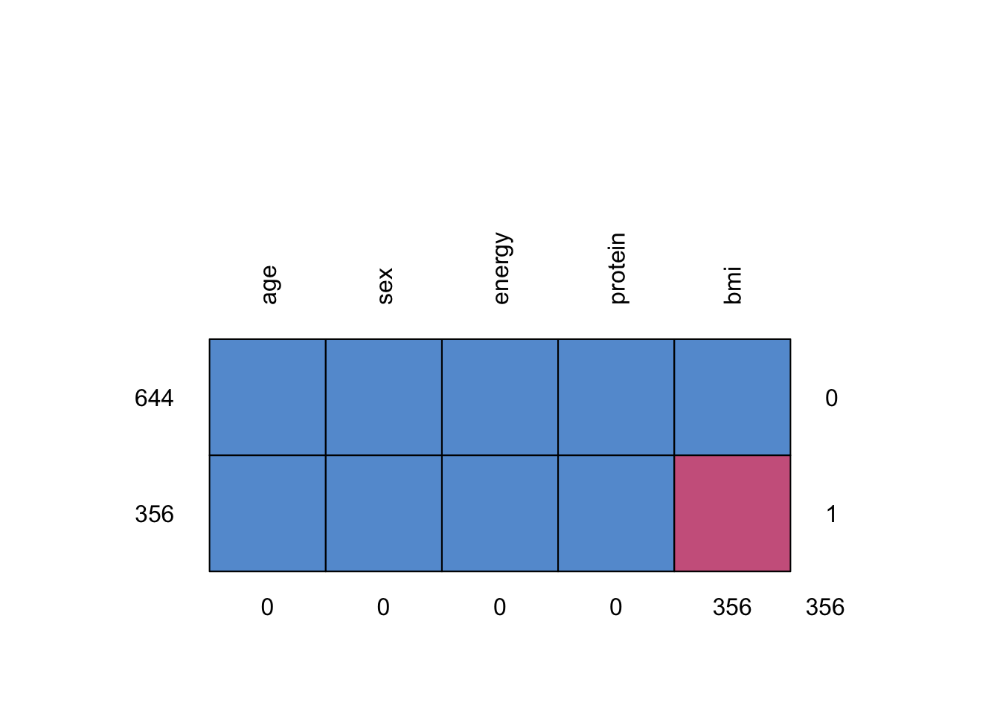

setwd("/Users/hannah/Documents/GitHub/CodingClub_workshop/2.0-Missing_Data")# install.packages(c("GGally", "mice", "tidyverse", "finalfit"))library(tidyverse) # for data wraggling
library(finalfit) # great package to handle missing datalibrary(GGally) # for visualizing missing pattern
Registered S3 method overwritten by 'GGally':
method from
+.gg ggplot2
library(mice) # for multiple imputation
Attaching package: 'mice'
The following object is masked from 'package:stats':
filter
The following objects are masked from 'package:base':
cbind, rbind
Load demo data (if needed need)
# select a subset for multiple imputation exerciseload( here::here("data", "processed", "cchs2015_demonstration.rdata"))# select a subset of multiple imputation practiceMD <- cchs2015_demonstration %>%select(participantid, age, sex, bmi, energy, protein, cho, fat)# view MD subsetstr(MD)
participantid age sex bmi energy
Min. : 76 Min. :19.00 Male :498 Min. :16.27 Min. : 209.5
1st Qu.: 5111 1st Qu.:34.00 Female:502 1st Qu.:23.45 1st Qu.: 1348.3
Median :10126 Median :46.00 Median :26.66 Median : 1796.2
Mean :10071 Mean :45.53 Mean :27.55 Mean : 1953.2
3rd Qu.:14897 3rd Qu.:57.00 3rd Qu.:30.36 3rd Qu.: 2390.3
Max. :20460 Max. :70.00 Max. :61.83 Max. :11155.7
NA's :356
protein cho fat
Min. : 3.915 Min. : 25.01 Min. : 1.317
1st Qu.: 54.092 1st Qu.: 152.26 1st Qu.: 43.611
Median : 74.793 Median : 210.71 Median : 64.878
Mean : 83.182 Mean : 229.71 Mean : 73.806
3rd Qu.:102.048 3rd Qu.: 288.48 3rd Qu.: 91.824
Max. :361.825 Max. :1249.47 Max. :534.565
missing values are represented with NA
variables with missing: bmi
2. Our question
Mock question of interest: is energy intake associated with with fat intake?
Dependent: energy intake
Main predictor: fat intake
Covariates of interest: age, sex, bmi
Auxiliary variables:
Variables that are either correlated with missing variable (r > 0.4) or believed to be associated with missingness. Use your knowledge!
To increase power and/or help make the assumption of MAR more plausible
protein, cho
3. Explore pattern of missingness
explanatory =c("protein", "age", "sex", "bmi")dependent ="energy"# look for patterns of missingnessMD %>%missing_pattern(dependent, explanatory)

age sex energy protein bmi
644 1 1 1 1 1 0
356 1 1 1 1 0 1
0 0 0 0 356 356
there are two pattern of missingness
# explore pattern of missingnessMD %>%missing_pairs(dependent, explanatory, position ="fill")
4. deciding how to handle the data: multiple imputation
4.1 imputation phase
Dependent: energy intake
Main predictor: fat intake
Covariates of interest: age, sex, bmi
Auxiliary variables: protein, cho
# impute missing values for all variables using mice package# in our case, we would just need to include all variables in MD# number of imputation: 10multiple_imputation =mice( MD,seed =123,m =10,print =FALSE)
note: mice has many prediction methods including Predictive Mean Matching, Chained Equations, Random Forests, etc. We are using the default Predictive Mean Matching
4.2 analysis and pooling phase
model_fit <-with(multiple_imputation, lm(energy ~ fat + age + sex + bmi))base::summary(mice::pool(model_fit)) %>% tibble::as_tibble() |> knitr::kable(digits=2 )
term
estimate
std.error
statistic
df
p.value
(Intercept)
921.66
85.49
10.78
378.85
0.00
fat
17.04
0.30
56.15
992.79
0.00
age
-2.53
0.97
-2.62
983.81
0.01
sexFemale
-164.88
27.89
-5.91
990.49
0.00
bmi
-1.01
2.52
-0.40
170.54
0.69
5. potential things to think about
choose your auxiliary variables carefully! make sure to include all variables that you think are associated with or predict missingness!
number of imputation: Recommendation varies. Rule of thumb:
5-20 imputations: low fractions of missingness
as many as 50 or more if needed: high fraction of missingness
bottom line: coefficient eventually stabilize after certain number of imputation. Can run different time of m to assess stability
about transformed variables: recommend to just treat them as another variable and back transform if necessary
not covered but need to know: there are ways to assess imputation quality!
6. Reference
Multiple Imputation in SAS. UCLA: Statistical Consulting Group. From https://stats.oarc.ucla.edu/sas/seminars/multiple-imputation-in-sas/mi_new_1/ (accessed April 27, 2023)
Batra, Neale, et al. The Epidemiologist R Handbook. Chapter 20 Missing Data. 2021.
Enders, C. K. (2022). Applied Missing Data Analysis. Guilford Publications. https://books.google.ca/books?id=b294EAAAQBAJ